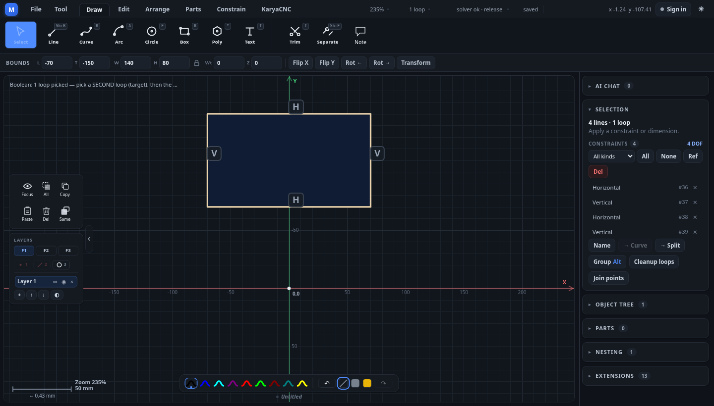

Tab Draw — Menggambar
Tab Draw adalah tempat utama untuk membuat geometri. Semua alat tersedia sebagai tombol besar di ribbon dan melalui tombol pintas huruf pada keyboard.

Contoh menggambar kotak dan garis


1. Daftar alat dan tombol pintas
| Tombol | Alat | Keterangan |
|---|---|---|
| Shift+B | Garis (Line) | Klik titik awal, titik akhir, dan seterusnya untuk rangkaian garis. |
| B | Kurva Bézier (Curve) | Klik untuk sudut, klik-tahan-geser untuk lengkung halus. |
| * | Poligon / Bintang (Poly) | Titik pusat dulu, lalu radius dan sudut awal. Roda mouse atur persen dalam bintang. |
| A | Busur (Arc) | Busur 3 titik: dua titik ujung lalu titik tempat lengkung. |
| E | Lingkaran (Circle) | Titik pusat lalu radius. |
| R | Kotak (Box) | Drag untuk menentukan ukuran. |
| T | Teks (Text) | Isi konten, pilih font, gaya, ukuran, jarak huruf. |
| I | Potong (Trim) | Potong di persimpangan. Ctrl+klik menyaluri seluruh rantai. |
| Shift+E | Pisah (Separate) | Membelah tanpa menghapus (Trim tanpa kehilangan). |
| Ctrl+M | Transformasi (Transform) | Pindahkan, putar, ubah ukuran objek. |
2. Tips saat menggambar
- Tahan Shift saat menggambar: sudut menempel ke kelipatan 15°.
- Tahan Alt saat menggambar: membalik status Snap sementara.
- Enter menyelesaikan bentuk, Esc membatalkan atau mengambil garis/node terakhir kembali.
- Klik titik awal lagi untuk menutup lingkaran (loop lengkap).
- Saat menggambar, titik baru menempel ke titik yang sudah ada, titik tengah garis, dan titik terdekat pada garis — masing-masing membuat constraint Midpoint / On line yang sungguhan.
- Shift+5 (%) menghidupkan/mematikan snap. Mati berarti mati: tidak ada yang menempel sama sekali.
- Grid snapping hanya aktif saat grid nyala (#).
Urutan prioritas snap
Saat snap nyala, kursor menempel ke target pertama yang ditemukan mengikuti urutan ini (dari paling spesifik ke paling umum):
- Titik yang sudah ada (berwarna sama akan dilebur/weld; warna lain hanya dipakai sebagai posisi, ditandai marker amber snap-only).
- Titik asal (0,0).
- Geometri garis/busur/kurva — termasuk midpoint dan on line.
- Pusat loop tertutup (centroid; untuk lingkaran = pusatnya).
- Grid — hanya bila grid tampil (#).
Jika snap dimatikan lewat menu Tool (Snap leaves constraints), menempel ke garis tidak lagi meninggalkan constraint Midpoint / On line.
3. Alat khusus
Kotak (Box, R) — sudut membulat dengan roda mouse
Tarik dua sudut berlawanan seperti biasa. Selama menarik, putar roda mouse untuk mengatur radius fillet (tahan Shift = langkah halus). Saat kotak diletakkan, muncul konfirmasi radius (0 = sudut tajam). Jika Anda tidak pernah memutar roda, kotak langsung dibuat dengan sudut tajam tanpa ditanya.
Kurva Bézier
Klik untuk sudut, klik-tahan-geser untuk lengkung halus, klik node pertama untuk menutup. Enter, klik ganda, atau klik kanan mengakhiri kurva; Esc membatalkan. Preview mengikuti aturan yang sama, jadi yang terlihat itulah hasilnya.
Busur (3 titik)
Klik dua titik ujung yang dilalui busur, lalu titik ketiga tempat busur melengkung. Jika tiga titik segaris, alat menolak. Tekan Space di langkah ketiga untuk beralih antara busur dan lingkaran penuh melalui ketiga titik.
Potong (Trim)
Klik satu span, bagian itu hilang, sisanya tetap. Ctrl+klik menyaluri seluruh rantai garis, busur, dan kurva yang bersentuh sekaligus. Kurva tertutup tidak punya ujung, jadi klik biasa membelah di setiap persimpangan.
Pisah (Separate)
Sama seperti potong tetapi tidak menghapus apa pun — seperti Trim tanpa kehilangan bentuk.